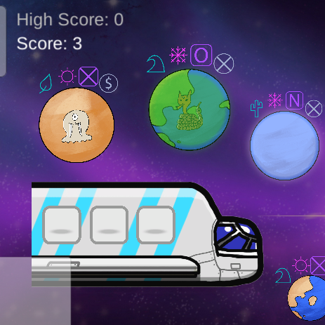
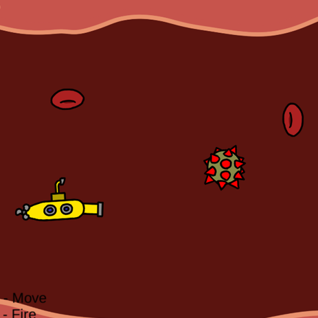
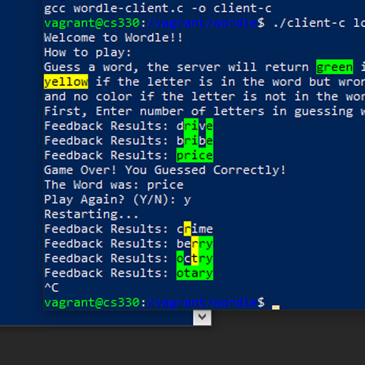

Group Projects
The projects below show off some of my work done with others.
-

Wicked Wizards
Programmer for Wicked Wizards Senior Capstone Game! Multiplayer co-op horde shooter game, focused on corrupting the world around you!
-
Alien Ark 2D Game
Strategy game created with a team. A space realtor looking to get aliens onto the planet best fit for them. Watch out for the evil ship that will try to disrupt your progress!
-

Operation Submarine
Infinite Runner type game created with a team. A new Covid-19 variant has entered the United States! As the vaccine, save the human's life and eliminate all the covid cells as a submarine!
-

Text-Based Wordle
Text-based recreation of the popular wordle game. Runs in UNIX via C. User can select any amount of letters from 3-10. After selecting the letter count, players can keep playing to earn a high score of multiple words in a row!
-
T6 BR Mod
A mod for Call of Duty Black Ops II Zombies that incorporates battle royale. Players can go around the map searching for items to ensure their ultimate survive over the hoards! When players die they become a zombie and can chase the other players that are still alive.
-
T6 Bonus Survival Maps
A mod for Call of Duty Black Ops II Zombies that adds more "survival" maps into the game. These are The mod has been evolved over the years to implement new gamemodes and more maps.
-
T7 FNAF2 Zombies
A custom zombies map for Call of Duty Black Ops III Zombies. Based on the Five Nights at Freddy's 2 game, this map is a tight quartered experience with zombies running around the pizzaria. I scripted the "easter egg" for the map.